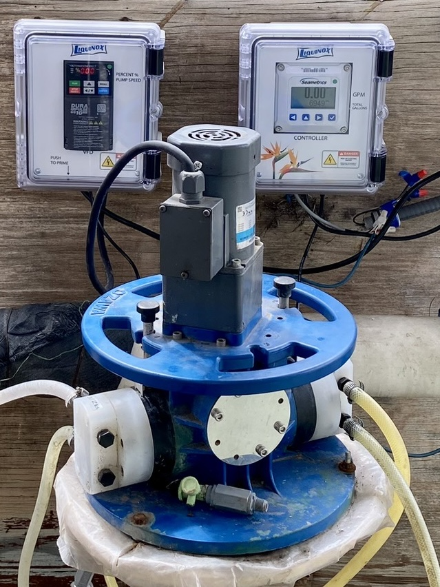

Industries Served
Applications & Industries
Ozawa injection pumps are trusted across commercial agriculture, horticulture, and specialty crops — wherever precise liquid delivery makes a measurable difference in yield and efficiency.
Vegetable Farming
Flow-paced injection synchronized to water meter output ensures fertilizer ratios stay consistent regardless of run time or flow variation. Compatible with drip tape, overhead sprinklers, and furrow systems.
Golf Courses
Deliver turf fertilizers, wetting agents, and iron treatments through existing irrigation infrastructure. Multi-head units let greens, tees, and fairways receive different nutrient programs from a single pump station.
Nurseries & Garden Centers
Constant-feed fertigation keeps container plants at peak nutrition without hand-watering labor. The Ozawa's wide adjustment range covers everything from seedlings to established stock.
Drip & Micro Irrigation
Inject directly into low-pressure drip or micro-spray laterals. The self-priming positive-displacement design maintains accurate dosing even at the low flow rates typical of micro systems.
Pivot & Flood Irrigation
High-capacity 500 series models handle the flow volumes required for center pivot and flood irrigation fertigation. The DC variable-speed motor links to pivot controls for fully automated injection.
Cannabis & Specialty Crops
Precise nutrient delivery across multiple growth stages — vegetative, pre-flower, and bloom formulations injected simultaneously through separate heads with exact EC and pH targets.
pH & Acid Injection
Maintain target pH ranges in irrigation water by metering acid or base solutions proportionally to flow. Wetted parts are compatible with sulfuric, phosphoric, and citric acid.
Industrial & Off-Grid Systems
Beyond agriculture — boiler acid injection, soap and wax metering, chlorine injection in water treatment, and solar-powered remote field installations via 24V DC motor option.



Key Capability
Inject Up to 4 Chemicals Simultaneously
One of the defining features of the Ozawa 404-4 and multi-head 500 series is the ability to inject up to four different liquid chemicals at the same time — each through its own independent metered head with individual flow adjustment.
One pump unit handles a complete nutrient program: no separate injectors, no additional installation hardware. Each head is independently adjustable in 20% increments from ounces per hour up to 36 GPH.
(N-P-K)
(Fe, Zn, Mn)
(H₂SO₄ / H₃PO₄)
or Chlorine
Ozawa 404-4 — four independent heads, each individually adjustable